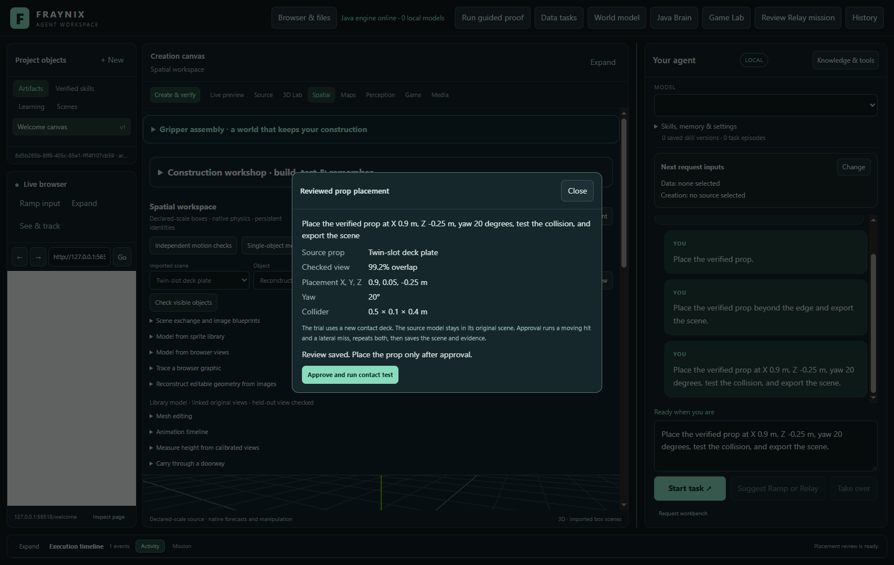
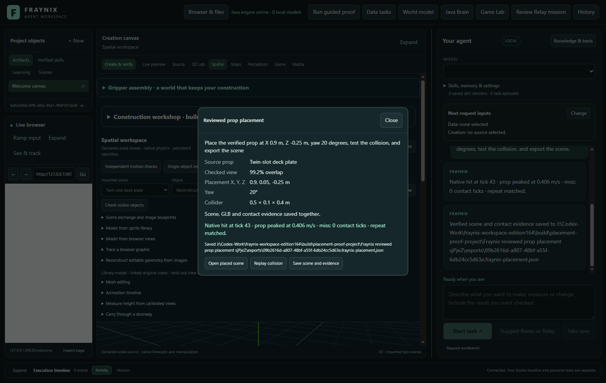
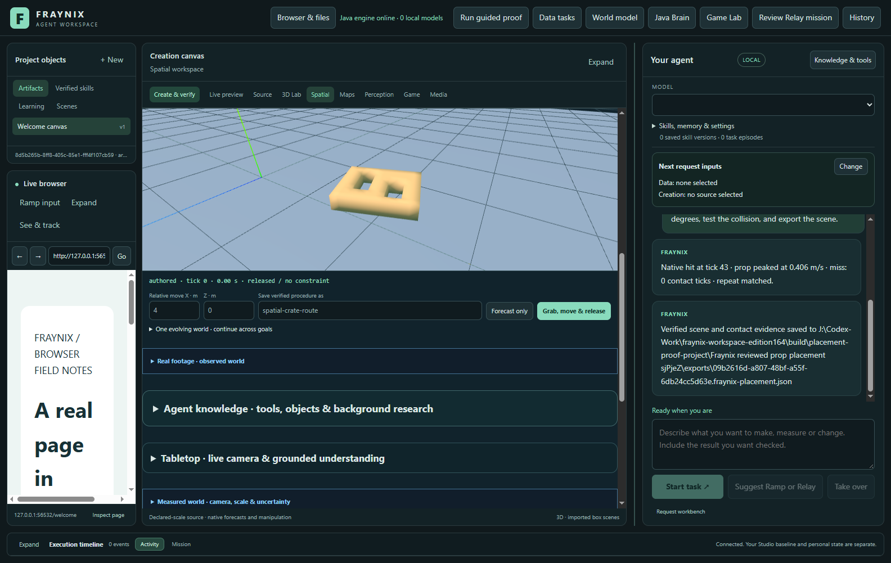

Approve a chat placement and export measured collision evidence
Review a checked prop, measure a native hit and miss, and keep the scene and evidence after restart.
The approved prop had first contact at tick 43; the lateral control had zero contacts. Replay after restart reproduced the evidence and export.

The exact placement is ready for approval

The native hit and miss are retained with the export

The new authored scene in Spatial
System files
Open source